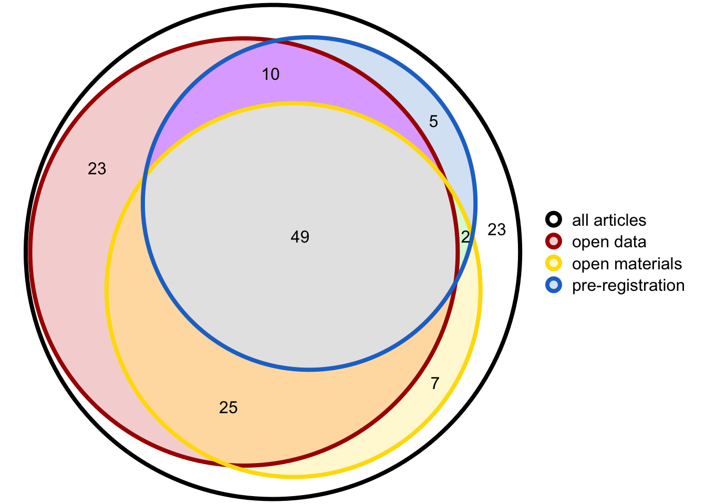

1 Scraping data
1.1 Scrape Data
Get all DOIs and some info from papers in the 2022 issues.
Code
toc <- paste0("https://journals.sagepub.com/toc/pssa/33/", 1:12)
get_dois <- function(toc_page) {
html <- read_html(toc_page)
contents <- html_elements(html, ".issue-item__container")
badges <- sapply(contents, function(content) {
content |>
html_elements(".issue-item__badges") |>
lapply(function(x) {
html_elements(x, "img") |>
html_attr("src") |>
gsub("/products/sage/releasedAssets/images/", "", x = _) |>
gsub("\\.svg", "", x = _) |>
c("paper")
})
})
dois <- html_elements(contents, ".issue-item__title a") |>
html_attr("href") |>
gsub("/doi/abs/", "", x = _)
access <- html_elements(contents, ".issue-item-access") |>
html_text2()
type <- html_elements(contents, ".issue-item-access + span") |>
html_text2()
list(
doi = dois,
badges = badges,
access = access,
type = type
) |> as_tibble() |>
unnest(badges) |>
mutate(x = TRUE) |>
pivot_wider(values_from = x,
values_fill = FALSE,
names_from = badges) |>
select(-paper)
}
papers <- map_df(toc, get_dois)
saveRDS(papers, "data/papers.rds")Code
get_open <- function(doi) {
html <- read_html(paste0("https://doi.org/", doi))
open <- html |>
html_element("#open-science") |>
html_element("div")
open_text <- html_text2(open)
open_links <- open |> html_elements("a") |>
html_text() |>
setdiff("http://www.psychologicalscience.org/publications/badges") |>
paste(collapse = ";")
# extract all OSF links
osf <- html_text2(html) |>
str_extract_all("osf.io/[A-Za-z0-9]*") |>
unlist() |>
unique() |>
paste(collapse = ";")
data.frame(
doi = doi,
osf = osf,
open_text = open_text,
open_links = open_links)
}
# test on a random DOI
#papers$doi |> sample(1) |> get_open()
open <- map_df(papers$doi, get_open)
saveRDS(open, "data/open.rds")1.2 Fix problems
Two papers were further reflections, so open text is not relevant. They were mislabelled as research articles.
The Open Practices section of 10.1177/09567976221119727 was not labelled correctly.
Code
doi <- "10.1177/09567976221119727"
html <- read_html(paste0("https://doi.org/", doi))
open <- html |> html_element("#sec-1 div")
open_text <- html_text2(open)
links <- open |> html_elements("a") |> html_text()
open_links <- links[startsWith(links, "https")] |>
paste(collapse = ";")
paper_data[paper_data$doi == doi, "open_text"] <- open_text
paper_data[paper_data$doi == doi, "open_links"] <- open_linksPapers with no links in the open statement. Check that they really aren’t sharing data.
10.1177/09567976221119393 has a link without link formatting.
1.3 Descriptives
Code
venndat <- list(
`all articles` = 1:nrow(res_papers),
`open data` = which(res_papers$`open-data`),
`open materials` = which (res_papers$`open-materials`),
`pre-registration` = which(res_papers$`pre-registred`)
)
set.seed(8675309)
venndat |>
euler() |>
plot(quantities = TRUE,
#main = "Badges in 146 Psychological Science Articles (2022)",
legend = TRUE,
labels = FALSE,
edges = list(col = c("black", "#aa0000ff", "#ffdd00ff", "#2075cdff"), lwd = 4),
fills = c("white",
"#cc000033", "#ffdd0033", "#2075cd33",
"white", "white", "white", "white", "white", "white",
"#ffaa1066", "#aa00ff66", "#00dd3333",
"white", "grey90"))